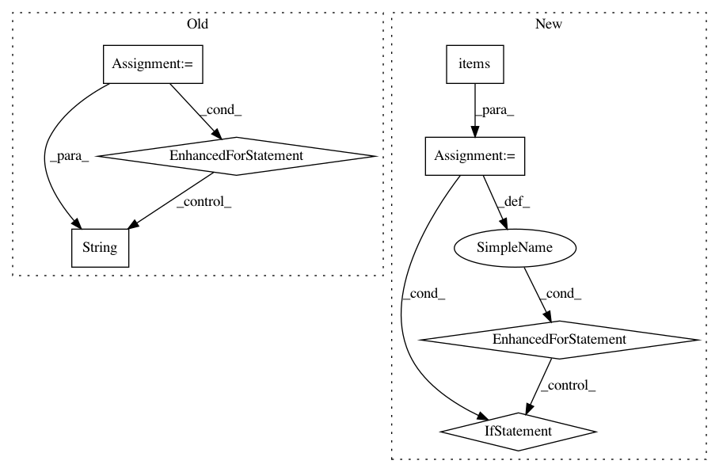

222491435716cc587bde288964d65061847ecfc1,dataset/research/workers.py,PipelineWorker,run_job,#PipelineWorker#,47
Before Change
if j in pipeline["dump_for"]:
self.log_info("Task {}, iteration {}: dump results for {}..."
.format(i, j, name), filename=self.logfile)
for item, config, repetition in zip(
job.experiments,
task["configs"],
task["repetition"]
):
path = os.path.join(
job["name"],
"results",
config.alias(as_string=True),
str(repetition),
name + "_dump"
)
item.dump_result(name, path)
except StopIteration:
self.log_info("Task {} was stopped after {} iterations".format(i, j+1), filename=self.logfile)
break
After Change
for item in job.experiments:
item._dump_pipeline_result(name, "."+name)
for name, function in job.config["functions"].items():
if j in function["execute_for"]:
self.log_info("Task {}, iteration {}: call function {}..."
.format(i, j, name), filename=self.logfile)
for item in job.experiments:
item.call_function(j, name)
if j in function["dump_for"]:
self.log_info("Task {}, iteration {}: dump results for function {}..."
.format(i, j, name), filename=self.logfile)
for item in job.experiments:
item._dump_function_result(name, "."+name)
except StopIteration:
self.log_info("Task {} was stopped after {} iterations".format(i, j+1), filename=self.logfile)
break
In pattern: SUPERPATTERN
Frequency: 3
Non-data size: 7
Instances
Project Name: analysiscenter/batchflow
Commit Name: 222491435716cc587bde288964d65061847ecfc1
Time: 2018-05-04
Author: a.kozhevin@analysiscenter.ru
File Name: dataset/research/workers.py
Class Name: PipelineWorker
Method Name: run_job
Project Name: Scitator/catalyst
Commit Name: 60dfcf812eca79017dced46e1189245c050a3fd6
Time: 2018-12-10
Author: scitator@gmail.com
File Name: utils/factory.py
Class Name: UtilsFactory
Method Name: unpack_checkpoint
Project Name: pantsbuild/pants
Commit Name: 91d4af0d59877cdc19b76854f3c90ed0341a367e
Time: 2019-12-10
Author: john.sirois@gmail.com
File Name: src/python/pants/backend/python/subsystems/pex_build_util.py
Class Name: PexBuilderWrapper
Method Name: add_resolved_requirements